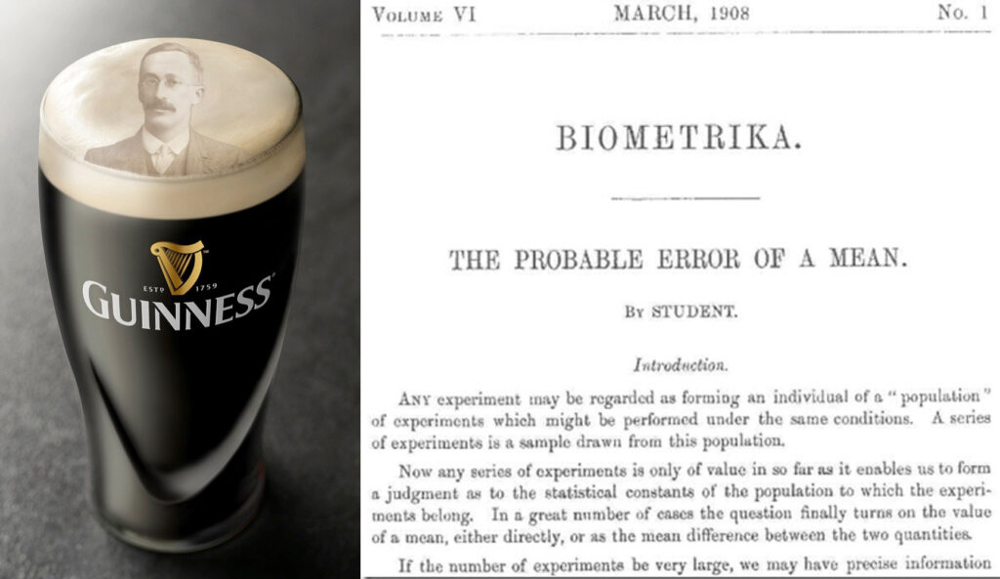
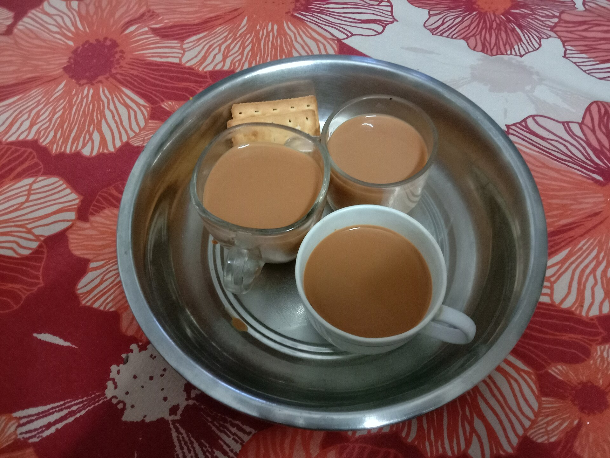

The main objective of this course are to help you acquire or improve your statistical common sense, and to help you analyse data. You have likely had at least one course in statistics before, but without the opportunity to practice with real-world data, you may have had difficulty connecting the concepts to any meaningful biological inference.
We are not real statisticians teaching this course, simply practicing biologists who use statistics almost daily. This background influences the way we teach, which is grounded in examples and application—the ‘how’ of statistics. At times it may be useful to sign-post some of the more theoretical aspects of statistics—the ‘why’ of statistics—so that we may understand when to use certain statistical approaches appropriately.
Statistics serve two main purposes:
Proper statistical knowledge is key to experimental design; poor knowledge leads to wasted effort and unreliable conclusions.
William Sealy Gosset was employed by Guinness to apply science to quality control in beer production.
He needed a method for testing whether estimates from a small sample of the batch were evidence for the entire batch being high-quality.
For this, he invented the t-test:
\[ t = \frac{\bar{x}-\mu_0}{s/\sqrt{n}}\]
This tells us whether the average of the sample (\(\bar{x}\)), given the standard deviation of the sample (\(s\)) and the sample size (\(n\)), differs from a hypothesised true mean \(\mu_0\)
The t-test remains one of the most widely used tools in biology today.

One afternoon at Rothamsted, Dr. Ronald A. Fisher poured a cup of tea. Dr. Muriel Bristol declined, saying she preferred when the milk was poured first.
Dr. Fisher replied: “Nonsense — surely it makes no difference.” But Dr. Bristol insisted she could tell.
A colleague suggested: “Let’s test her.”
They quickly set up an experiment:
Dr. Bristol was told the design: 4 had milk added first, 4 had tea added first.
Her task: identify which was which.

Each cup has two pieces of information:
We can summarize these in a contingency table:
| Actual: Tea first | Actual: Milk first | Row total | |
|---|---|---|---|
| Says Tea | a | b | a + b |
| Says Milk | c | d | c + d |
| Col total | a + c | b + d | n |
By the design of the experiment, she must classify 4 as tea-first, and 4 as milk-first. This fixes the row and column totals:
\[a+b=4\] \[c+d=4\] \[a+c=4\] \[b+d=4\]
Once \(a\) (the number correctly identified tea-first cups) is known, the rest follow.
If she has no ability to discriminate, then choosing 4 cups as “tea-first” is just random.
There are:
Therefore, the probability of getting a perfect 4/4 correct = 1/70 ≈ 0.014.
By chance alone, very unlikely!
The number of correct identifications of tea-first cups a follows a hypergeometric distribution:
| Correct calls, \(a\) | Probability, \(p\)-value |
|---|---|
| 0 | 1/70 |
| 1 | 16/70 |
| 2 | 36/70 |
| 3 | 16/70 |
| 4 | 1/70 |
If she got:
This simple trial became the foundation of Fisher’s exact test, a method still used today.
Fisher immediately thought about:
These are the same questions we still ask when thinking about designing experiments, whether or not they have a similar form to the tea experiment. This “trivial” experiment illustrates:
And it reminds us: statistics is not just numbers, but a way of turning everyday claims into scientific evidence.
Imagine we are testing a new drug in mice.
At first glance, this looks promising — 2 extra days!
But we immediately face some questions…
These are exactly the same kinds of questions Fisher asked with tea cups.
Suppose:
The averages are 8 vs 6, but notice:
So we need a statistical framework to decide:
Is this difference bigger than we’d expect by chance alone?
Statistics helps us answer:
The logic is the same whether it’s:
Statistics gives us the tools to turn messy data into reliable evidence. It’s not just about “appeasing reviewers” or “getting the p-value right.”
It’s about: